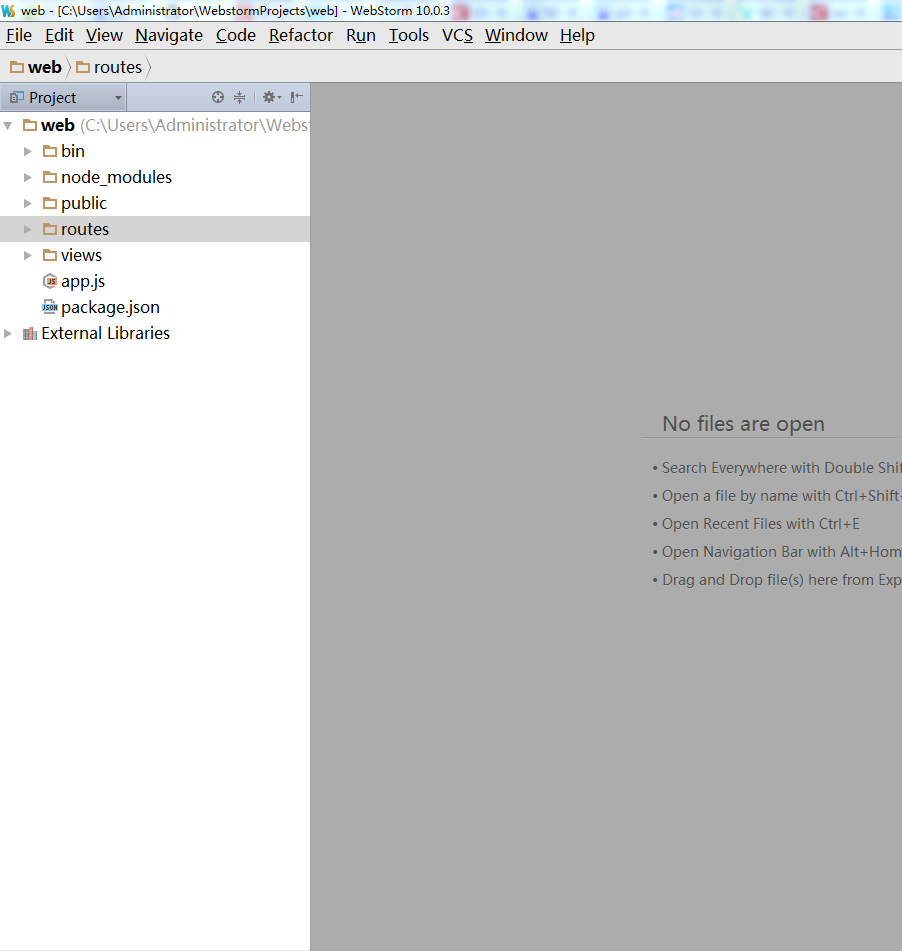

node.js
[TOC]
环境搭建
Angularjs + Express3 + Bootstrap3
angularjs是由Google团队开发的一款非常优秀web前端框架。Bootstrap让界面美观大方，对于不懂UE的人，也能做出专业级的水准。再结合Nodejs的Express做后端，三剑合并，太无敌了，大有统一前端开发的趋势，前途不可估量！
1. 首先安装node.js
2. webStorm(node.js最好的IDE开发工具)
3. express 安装
express 是轻量灵活的Nodejs Web应用框架1
npm install express
安装成功后在node_modules下会找到express目录，同时也会找到.bin目录，它里面有express命令脚本，在终端下执行1
express project_name
4. Bower安装
bower是一个客户端技术的软件包管理器，它可用于搜索、安装和卸载如JavaScript、HTML、CSS之类的网络资源。安装依赖：NodeJS、NPM、Git
安装包是可使用1
2bower install <package>
bower install jquery
其中包的形式的可以是GitHub简写、一个git地址、一个url或者其他。1
2
3
4
5
6
7
8# registered package
$ bower install jquery
# GitHub shorthand
$ bower install desandro/masonry
# Git endpoint
$ bower install git://github.com/user/package.git
# URL
$ bower install http://example.com/script.js
如果安装成功，则目录中会出现bower_components子目录，其中包括了下载的jQuery源文件。
卸载包可以使用uninstall 命令：1
$ bower uninstall jquery
Q：安装bower时，报Bower : ENOGIT git is not installed or not in the PATH错误？
- windows中
需要配置你的Git到path，假如你的git安装目录是”C:\Program Files (x86)\Git”，在path中加入git的bin和cmd目录，如C:\Program Files (x86)\Git\bin;C:\Program Files (x86)\Git\cmd - Ubuntu 中
1
$ apt-get install git
5. angular、bootstrap安装
1 | bower install angular |
web开发
Express + EJS + Mongoose/MySQL，通常用Nodejs做Web开发，需要这3个框架配合使用，就像Java中的SSH。
- express 是轻量灵活的Nodejs Web应用框架
- ejs是一个嵌入的Javascript模板引擎，通过编译生成HTML的代码。
- mongoose 是MongoDB的对象模型工具，通过Mongoose框架，可以进行访问MongoDB的操作。
应用实例：
Web聊天室(IM)：Express + Socket.io
socket.io一个是基于Nodejs架构体系的，支持websocket的协议用于时时通信的一个软件包。socket.io 给跨浏览器构建实时应用提供了完整的封装，socket.io完全由javascript实现。
第一个web工程
- 新建工程
创建成功后入下图所示：

app.js：是项目的入口文件
node_modules/： 项目的依赖库。存放npm安装到本地依赖包，依赖包在package.json文件中声明，使用npm install指令安装。
package.json： npm依赖配置文件， 类似ruby中的Gemfile, java Maven中的pom.xml文件. 一会需要在这里添加 markdown-js 项目依赖。
public/： 存放静态资源文件, jquery/prettify.js等静态库会方这里，当然自己编写的前端代码也可以放这里
view/： 模板文件, express默认采用jade, 当然，你也可以使用自己喜欢的haml,JES, coffeeKup, jQueryTemplate等模板引擎
routes： 路由文件(学习的重要攻克对象。业务好不好，路由是关键)
- 目录结构
- public 公共插件
- routers 业务逻辑
- views 页面展示